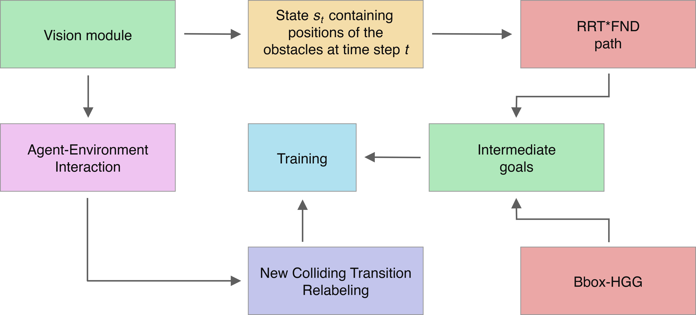

Collision of a manipulated object (red) and dynamic obstacle (blue).
Complex Robotic Manipulation for Dynamic Obstacle Avoidance via Motion Planning and Colliding Transition Relabeling with Reinforcement Learning
In recent years, deep reinforcement learning (RL) has been successfully applied in robotics to solve complex object manipulation tasks. Hindsight Experience Replay (HER) is the first algorithm that enabled sample-efficient learning when using sparse and binary rewards in multi-goal RL. Hindsight Goal Generation (HGG) expanded the scope of HER to reach distant goals, and Graph-based Hindsight Goal Generation (G-HGG) allowed HGG to be used in static obstacle environments. In turn, Bounding Box-based HGG (Bbox-HGG) extended the applicability of G-HGG to unknown and dynamic environments by using a camera for object recognition and tracking of moving obstacles. Although Bbox-HGG performed much better than G-HGG in dynamic scenarios, it is still not sufficient to avoid collisions with moving obstacles in more challenging environments.
In this work, we introduce the Bbox-RRT-HGG algorithm, which additionally uses a Rapidly-exploring Random Tree (RRT) -based approach for intermediate goal generation. Also, we improve the Colliding Transition Relabeling (CTR) mechanism, which was originally presented in the Bbox-HGG. We evaluate our algorithm using MuJoCo simulation in three object manipulation scenarios with dynamic obstacles. The results show significant improvements over the regular Bbox-HGG in terms of collision avoidance rate. Therefore, we expect our algorithm to improve the general applicability of sparse reward RL in the real world, where unknown dynamic obstacle behaviour is common.
Algorithm Overview
The introduced improvement of the algorithm consist of two parts, each aimed at decreasing the number of collisions with moving obstacles. We use the same pretrained vision module to represent the environment and detect objects as in the Bbox-HGG. Obstacle-avoiding distance graph is precalculated at the beginning of the training and includes regions with static obstacles and regions that are constantly occupied by dynamic obstacles. Additional information about moving obstacles (e.g., minimal distance, angles between bounding boxes) is stored at the modified state and is updated after every step.

The environments are constructed according to the OpenAI Gym structure (Brockmanet al. 2016). The robotic simulation is supported by the MuJoCo (Todorov et al. n.d.)engine with inverse kinematics. We run our experiments using a simulation of a 6DOF fetch robotic arm, which manipulates a red puck with an end effector. The end goal is represented by a green square, whereas rectangles are used to represent the obstacles. All three environments contain dynamic obstacles and the last one is a mixed environment, i.e. it includes a dynamic as well a two static obstacles.
Direction arrows to avoid collision with a moving obstacle.
3D environment with multiple dynamic obstacles.